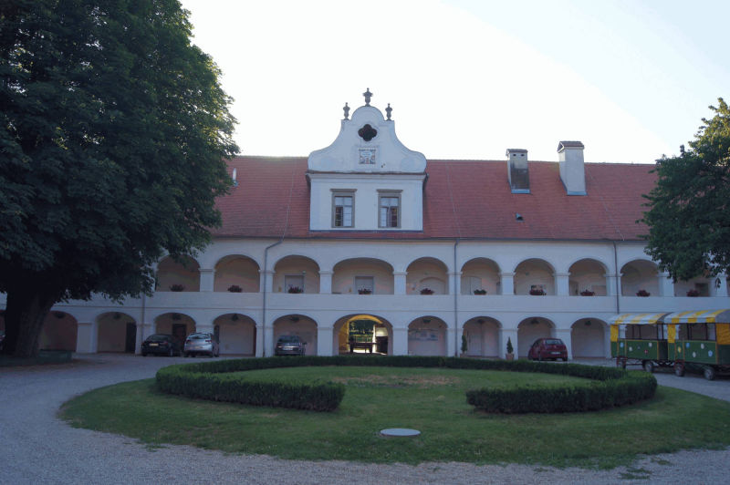

На карте мира Словения напоминает курицу, как Италия сапог.
Так вот в голове курицы на северо- востоке распологается регион Помурье.
Название регион получил от быстротечной и очень рыбной реки Мура. Помурье богато лучшими плантациями виноградников в стране, которые входят в 5-ку лучших в Европе, плодородными полями, сохранившимися традициями и культурой. Поэтому здесь есть старые деревяные мельницы, дома и вековые сорта фруктовых деревьев.
Остров любви - такое романтичное название у единственной в Словении плавучей мельницы на реке Мура, вековой механизм которой до сих пор прекрасно молит муку.
Прогулка вдоль
Скрытые жемчужины Словении, еще не открытые для туристов до конца - регионы Прекмурье и Прлекия (области Помурьч) называют также панонской Словенией, так как расположены они на дне бывшего Панонского моря и богаты целебными термальными источниками.
Мирных, заповедных мест в Словении очень много.
Но особенно уставшим от городской суеты сюда! Остановившись в Прекмурских терме , не все знают на сколько удивителен и прекрасен этот самый восточный регион Словении.
В первую очередь, знайте что здесь живут самые гостеприимные словенцы, которые душевностью напоминают нас, русских. Здесь 260 дней в году солнце, что нельзя сказать например, об окружённой горами, туманной Любляне.
Всего 100 лет назад территория Прекмурья относилась к Венгрии.
Но здесь всегда жили словенцы, которые говорили на своём диалекте- прекмурском. Даже именно на прекмурском написаны разнотематические книги.
Среди красот Прекмурья: быстротечная река Мура с вековыми водяными мельницами, самый большой замок в стране, сюда, на лето прилетают сотни аистов.
Поднявшись на башню Винариум в гооде Лендава на границе с Венгрией видно 4 страны. Изобилие прекмурских кулинарных изысков в домашних ресторанах выше всяких похвал.
Также в Прекмурье есть мумия! Это сохранившееся тело национального героя Хадика, которое сейчас лежит в небольшой часовне св. Троицы. Герой погиб в начале 17 в. в сражении с османами и был похоронен на обычном кладбище. Спустя почти два века, тело решили перезахоронить с почастями.
Тогда и обнаружили, что тело муминизировалось. Неповторимая Прлекия-обладательница лучших мест для выращивания винограда （белых сортов ) в мире, манящая пейзажами, историей походов крестоносцев также укрыта от толп туристов.
3 старейших в Словении винных погреба отличное дополнение к путешествию. И это далеко не все чем интересно Помурье! Также имейте в виду, что из Помурья всего 220 км. до Вены, 100 км. до Граца, 280 км. до Будапешта и 140 км. до Загреба.